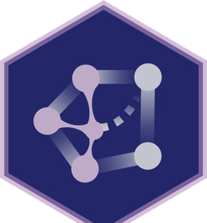

<script>
// 읽기 도우미: 읽은 장 기록, 장 첫머리 정보, 읽기 진행 막대, 장 끝 마무리(평가·진도·허브 다음 자료),
// 첫 화면 '이어 읽기', Causal Inference Hub로 가는 링크 추적. 기록은 이 브라우저에만 남는다.
(function () {
  var HUB = "https://causalinferencelab.github.io/";
  var BOOK_PATH = "/Causal-Inference-with-Python/";
  var NB = "https://github.com/CausalInferenceLab/Causal-Inference-with-Python/blob/main/causal-inference-for-the-brave-and-true/";
  // 같은 도메인의 허브와 저장소를 함께 쓰므로 웹북 기록은 cil-book-* 이름을 쓴다. 허브는 이 기록으로 진도와 여권 스탬프를 보여 준다.
  var KEY_READ = "cil-book-read", KEY_LAST = "cil-book-last", KEY_VOTE = "cil-book-vote";
  var HUB_PAGES = /^\/(?:$|index\.html$|article\.html$|game\.html$|lab\.html$|404\.html$|articles\/|builders\/|badges\/)/;

  function get(k, d) { try { var v = localStorage.getItem(k); return v ? JSON.parse(v) : d; } catch (e) { return d; } }
  function put(k, v) { try { localStorage.setItem(k, JSON.stringify(v)); } catch (e) {} }
  function track(name, params) { try { if (typeof window.gtag === "function") window.gtag("event", name, params || {}); } catch (e) {} }
  window.cilTrack = track;
  function esc(s) { return String(s).replace(/[&<>"]/g, function (c) { return { "&": "&amp;", "<": "&lt;", ">": "&gt;", '"': "&quot;" }[c]; }); }
  function slug(href) { return (href || "").split("#")[0].split("?")[0].split("/").pop().replace(/\.html$/, "") || "index"; }

  // ---------- 허브(같은 도메인의 팀 사이트)로 가는 링크: 같은 탭, utm_*, 클릭 이벤트 ----------
  function placement(a) {
    var spots = [[".cil-hubbar", "hubbar"], ["#quarto-sidebar", "sidebar"], [".quarto-secondary-nav", "topbar"], [".nav-footer", "footer"],
      [".hero", "hero"], [".hub-banner", "intro_banner"], [".cil-end", "chapter_end"], ["main", "content"]];
    for (var i = 0; i < spots.length; i++) if (a.closest(spots[i][0])) return spots[i][1];
    return "other";
  }
  function decorate(e) {
    var a = e.target.closest && e.target.closest("a[href]");
    if (!a) return;
    var u;
    try { u = new URL(a.href, location.href); } catch (err) { return; }
    if (u.origin !== new URL(HUB).origin || u.pathname.indexOf(BOOK_PATH) === 0) return;
    var site = HUB_PAGES.test(u.pathname) ? "hub" : u.pathname.split("/")[1];
    var where = placement(a);
    if (!u.searchParams.has("utm_source")) {
      u.searchParams.set("utm_source", "webbook");
      u.searchParams.set("utm_medium", "referral");
      u.searchParams.set("utm_campaign", "crosslink");
      u.searchParams.set("utm_content", where);
      a.href = u.toString();
    }
    if (e.type === "click" && e.button === 0 && !e.metaKey && !e.ctrlKey && !e.shiftKey && !e.altKey) a.removeAttribute("target");
    track(site === "hub" ? "hub_click" : "team_site_click", { site: site, placement: where, link_url: u.origin + u.pathname + u.hash });
  }
  document.addEventListener("click", decorate, true);
  document.addEventListener("auxclick", decorate, true);

  document.addEventListener("DOMContentLoaded", function () {
    var page = slug(location.pathname);
    var main = document.getElementById("quarto-document-content");

    // 책의 장 목록: 왼쪽 목차 순서(들어가며·용어집 제외)
    var chapters = [], seen = {};
    document.querySelectorAll("#quarto-sidebar a.sidebar-link[href]").forEach(function (a) {
      var s = slug(a.getAttribute("href"));
      if (s === "index" || s === "glossary" || seen[s]) return;
      seen[s] = 1;
      var num = a.querySelector(".chapter-number"), title = a.querySelector(".chapter-title");
      chapters.push({ slug: s, href: a.getAttribute("href"), link: a,
        num: num ? num.textContent.trim() : "", title: (title ? title.textContent : a.textContent).trim() });
    });
    var idx = -1;
    chapters.forEach(function (c, i) { if (c.slug === page) idx = i; });
    var read = get(KEY_READ, {});
    function readCount() { return chapters.filter(function (c) { return read[c.slug]; }).length; }
    function label(c) { return (/^\d+$/.test(c.num) ? c.num + "장 " : c.num ? "부록 " + c.num + " " : "") + c.title; }

    // 왼쪽 목차에 읽은 장 표시
    function paintSidebar() {
      chapters.forEach(function (c) {
        c.link.classList.toggle("is-read", !!read[c.slug]);
        if (read[c.slug]) c.link.setAttribute("title", "읽은 장"); else c.link.removeAttribute("title");
      });
    }
    paintSidebar();

    // 모든 페이지 맨 위: 이 책이 Causal Inference Hub의 자료라는 띠
    if (main) {
      var bar0 = document.createElement("div");
      bar0.className = "cil-hubbar";
      bar0.innerHTML =
        '<a class="cil-hubbar-home" href="' + HUB + '">' +
          '<span><b>Causal Inference Hub</b><small>가짜연구소 인과추론팀</small></span></a>' +
        '<span class="cil-hubbar-where">이 책은 허브 커리큘럼의 <b>L1</b> 자료입니다</span>' +
        '<nav class="cil-hubbar-nav" aria-label="Causal Inference Hub">' +
          '<a href="' + HUB + '#curriculum">커리큘럼</a><a href="' + HUB + '#posts">연재</a><a href="' + HUB + '#join">참여하기</a>' +
        "</nav>";
      main.insertBefore(bar0, main.firstChild);
    }

    // 좁은 화면 상단 막대: 허브 바로가기
    var nav = document.querySelector(".quarto-secondary-nav .container-fluid");
    if (nav) {
      var hb = document.createElement("a");
      hb.className = "cil-hub-mobile";
      hb.href = HUB;
      hb.setAttribute("aria-label", "Causal Inference Hub로 가기");
      hb.innerHTML = '<span>허브</span>';
      var sb = nav.querySelector(".cil-search-mobile");
      nav.insertBefore(hb, sb || null);
    }

    // ---------- 첫 화면: 이어 읽기 ----------
    var hero = document.querySelector(".hero .hero-actions");
    if (hero) {
      var last = get(KEY_LAST, null);
      var lc = last && chapters.filter(function (c) { return c.slug === last.slug; })[0];
      var n = readCount();
      if (lc) {
        var primary = hero.querySelector("a.primary");
        var cont = document.createElement("a");
        cont.className = "primary";
        cont.href = lc.href;
        cont.innerHTML = "이어 읽기 <span>· " + esc(label(lc)) + "</span>";
        cont.addEventListener("click", function () { track("continue_reading", { chapter: lc.slug }); });
        if (primary) hero.replaceChild(cont, primary); else hero.insertBefore(cont, hero.firstChild);
      }
      if (lc || n) {
        var p = document.createElement("p");
        p.className = "hero-progress";
        p.innerHTML = (n
          ? '<span class="bar"><i style="width:' + Math.max(2, Math.round(n / chapters.length * 100)) + '%"></i></span><span>이 브라우저에서 ' + chapters.length + "편 중 <b>" + n + "편</b>을 읽었습니다</span>"
          : "<span>지난번에 읽던 장부터 이어 읽을 수 있습니다</span>") +
          (lc ? '<a href="' + esc(chapters[0].href) + '">1장부터 읽기</a>' : "");
        hero.insertAdjacentElement("afterend", p);
      }
    }

    if (!main || idx < 0 || document.querySelector(".hero")) return;
    var ch = chapters[idx];
    put(KEY_LAST, { slug: ch.slug, label: label(ch), total: chapters.length, t: Date.now() });

    // ---------- 장 첫머리: 분량, 위치, 노트북 ----------
    var header = document.getElementById("title-block-header");
    var text = 0;
    main.querySelectorAll("p, li, h2, h3, h4, blockquote, td").forEach(function (el) {
      if (!el.closest(".cell, .callout, nav, #title-block-header")) text += el.textContent.replace(/\s+/g, "").length;
    });
    var minutes = Math.max(3, Math.round(text / 450));
    if (header) {
      var meta = document.createElement("div");
      meta.className = "cil-chapter-meta";
      meta.innerHTML =
        '<span>약 ' + minutes + "분</span>" +
        '<span>' + chapters.length + "편 중 " + (idx + 1) + "번째</span>" +
        '<a href="' + NB + ch.slug + '.ipynb" target="_blank" rel="noopener">노트북 보기</a>' +
        '<span class="cil-read-badge"' + (read[ch.slug] ? "" : " hidden") + ">✓ 읽은 장</span>";
      header.insertAdjacentElement("beforeend", meta);
    }

    // ---------- 읽기 진행 막대 ----------
    var bar = document.createElement("div");
    bar.className = "cil-progress";
    bar.setAttribute("aria-hidden", "true");
    bar.innerHTML = "<i></i>";
    document.body.appendChild(bar);
    var fill = bar.firstChild, ticking = false;
    function onScroll() {
      if (ticking) return;
      ticking = true;
      requestAnimationFrame(function () {
        ticking = false;
        var r = main.getBoundingClientRect();
        var total = Math.max(1, r.height - window.innerHeight * 0.6);
        var done = Math.min(1, Math.max(0, -r.top / total));
        fill.style.transform = "scaleX(" + done.toFixed(4) + ")";
      });
    }
    window.addEventListener("scroll", onScroll, { passive: true });
    window.addEventListener("resize", onScroll);
    onScroll();

    // ---------- 장 끝 마무리 ----------
    var next = { // 이 장 다음에 볼 허브 자료
      oce: ["OCE-Materials", "온라인 통제 실험", "이 장의 무작위 실험을 실무의 A/B 테스트로 잇는 스터디 자료입니다."],
      practice: ["causal-inference-practice", "산업 사례 템플릿", "인과 그래프부터 회귀 불연속 설계까지, 기법마다 산업 사례를 붙인 템플릿입니다. 이 장의 기법을 실제 문제에 적용해 볼 수 있습니다."],
      causalml: ["causal-inference-with-causalML", "CausalML 스터디", "이 책의 이론을 uber/causalml 코드로 다시 구현하며 이론에서 코드까지 잇는 스터디입니다."]
    };
    var nn = parseInt(page, 10), pick;
    if (nn === 2) pick = next.oce;
    else if (nn >= 17 && nn <= 23) pick = next.causalml;
    else if (nn >= 1 && nn <= 25) pick = next.practice;
    else if (/^(Debiasing|When-Prediction|Prediction-Metrics)/.test(page)) pick = next.causalml;
    else pick = next.practice;

    var votes = get(KEY_VOTE, {});
    var end = document.createElement("section");
    end.className = "cil-end";
    end.setAttribute("aria-label", "이 장을 마치며");
    end.innerHTML =
      '<p class="cil-end-stamp" hidden>처음으로 한 장을 끝까지 읽었습니다. 허브 활동 여권에 <b>웹북 독자</b> 스탬프가 찍혔어요. <a href="' + HUB + '#passport">여권 보기</a></p>' +
      '<div class="cil-end-row">' +
        '<div class="cil-end-vote" role="group" aria-label="이 장 평가">' +
          '<span class="q">이 장, 도움이 됐나요?</span>' +
          '<button type="button" data-vote="helpful" aria-pressed="false">도움이 됐어요</button>' +
          '<button type="button" data-vote="hard" aria-pressed="false">어려웠어요</button>' +
          '<span class="thanks" hidden></span>' +
        "</div>" +
        '<div class="cil-end-progress"><span class="t"></span><span class="bar"><i></i></span></div>' +
      "</div>" +
      '<aside class="hub-next" aria-label="Causal Inference Hub에서 이어 보기">' +
        '<p class="hub-next-k"><span>Causal Inference Hub에서 이어 보기</span></p>' +
        '<p class="hub-next-t">' + pick[1] + "</p>" +
        '<p class="hub-next-d">' + pick[2] + "</p>" +
        '<p class="hub-next-a">' +
          '<a class="primary" href="' + HUB + "#station=" + pick[0] + '">허브에서 보기</a>' +
          '<a href="' + HUB + '#station=Causal-Inference-with-Python">허브에서 이 책의 자리</a>' +
        "</p>" +
      "</aside>";
    var sentinel = document.createElement("div");
    sentinel.className = "cil-end-sentinel";
    main.appendChild(sentinel);
    main.appendChild(end);

    function paintProgress() {
      var n = readCount();
      end.querySelector(".cil-end-progress .t").innerHTML = read[ch.slug]
        ? "다 읽었습니다 · " + chapters.length + "편 중 <b>" + n + "편</b> 읽음"
        : chapters.length + "편 중 <b>" + n + "편</b> 읽음";
      end.querySelector(".cil-end-progress i").style.width = Math.round(n / chapters.length * 100) + "%";
      var badge = document.querySelector(".cil-read-badge");
      if (badge) badge.hidden = !read[ch.slug];
    }
    paintProgress();

    function paintVote(v) {
      end.querySelectorAll("[data-vote]").forEach(function (b) { b.setAttribute("aria-pressed", String(b.getAttribute("data-vote") === v)); });
      var t = end.querySelector(".thanks");
      if (!v) { t.hidden = true; return; }
      t.hidden = false;
      t.innerHTML = v === "hard"
        ? '고맙습니다. 어려웠던 부분을 <a href="#cil-comments">의견 나누기</a>에 남겨 주시면 번역을 다듬겠습니다.'
        : "고맙습니다!";
    }
    paintVote(votes[ch.slug]);
    end.addEventListener("click", function (e) {
      var b = e.target.closest("[data-vote]");
      if (!b) return;
      var v = b.getAttribute("data-vote");
      if (votes[ch.slug] === v) return;
      votes = get(KEY_VOTE, {});
      votes[ch.slug] = v;
      put(KEY_VOTE, votes);
      paintVote(v);
      track("chapter_feedback", { chapter: ch.slug, value: v });
    });

    // 끝까지 내려왔고 30초 이상 머물렀으면 읽은 장으로 기록
    var start = Date.now(), timer = 0;
    function complete() {
      read = get(KEY_READ, {}); // 다른 탭에서 읽은 장을 덮어쓰지 않도록 다시 읽는다
      if (read[ch.slug]) return;
      read[ch.slug] = Date.now();
      put(KEY_READ, read);
      paintSidebar();
      paintProgress();
      var n = readCount();
      if (n === 1) end.querySelector(".cil-end-stamp").hidden = false;
      track("chapter_complete", { chapter: ch.slug, chapter_index: idx + 1, read_count: n });
    }
    if ("IntersectionObserver" in window && !read[ch.slug]) {
      var io = new IntersectionObserver(function (entries) {
        if (!entries[0].isIntersecting) return;
        io.disconnect();
        var wait = Math.max(0, 30000 - (Date.now() - start));
        if (!wait) complete(); else timer = setTimeout(complete, wait);
      });
      io.observe(sentinel);
    }
  });
})();
</script>
